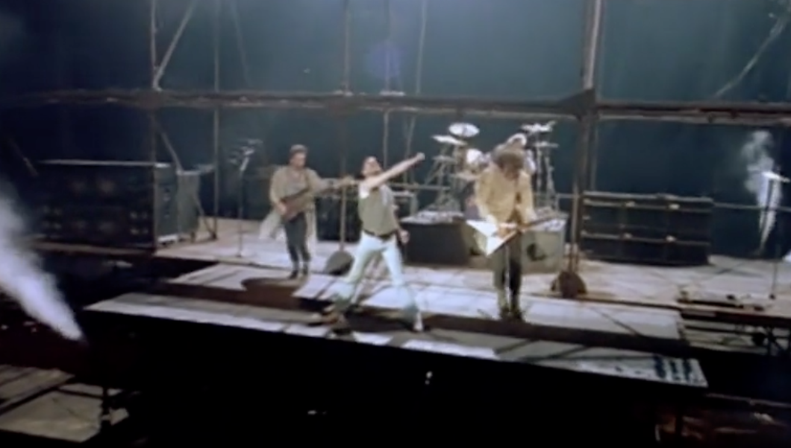

Ja, ich gebe zu, dass ich große Einfluss aus dem Film, Bohemian_Rhapsody, bekomme. Davor wusste ich nur den Name der Queen und könnte mir ein paar ihre Lieder anhören. Aber von diesem Film begann ich mit der Suche nach Dingen über diese Band und den Sänger. Davon habe ich mich eigentlich von diesem Sänger gefangen gegeben.
Prozess
Mächtig und chaotisch
Das Gefühl kommt meist von der Lieder, die ich gehört habe,sowie We Are the Champions, We Will Rock You . Ich hatte diesmal keine Ahnung von der Sänger, und habe es einfach als normale Popsongs behandelt. Es ist wirklich für die junge und kraftvolle Situation geeignet, wie die meisten Rock Musik. Wegen des Mangels über den Hintergrund ist es noch chaotischer für mich.
Pulsierend und aufschlußreich
Wenn ich einige ihre Alben gehört habe, hat sich meine Meinung nach sie geändert. Vom frühen Lied, Bohemian Rapsody, bis zur Späteren, Radio Ga Ga, kann ich spüren, dass sie nicht eines einfach, normal Rockband ist. So pulsierendes Band ist es. Besonders der Gesang, Freddie Meccury, aus der Lyrik des Liedes, Bohemian Rapsody, glaube ich, muss es ein paar Geschichten über ihn geben. Aber ich bin einfach so faul, das zu tun.
Fantastisch und entzückend
Nach ich dem Film gesehen habe, machte ich mich auf den Weg, um die ganze Geschichte über die Band herauszufinden, besonders Freddie.

Das Gefühl
Was für ein Leben ist nicht umsonst? Freddies Antwort ist das Leben wie ein Feuerwerk. Verschwende niemals das Geschenk des Lebens, das Musikstalent und Leistungstalent.

Die Verrückte Leistung auf der Bühne
Er ist komplett ein Bühnentier. Seiner vermischt sich mit Tambourstock, Luftgitarre, Balanciergerät und vieles anders Stil liegt der Zauber zwischen seinen Bewegungen und Tanz. Kraftvolles, inspiriertes und tänzerisches spürst du gänzlich in seiner Bühnenshow.

Die „Prostituierte der Musik“
Freddie sieht sich als die Prostituierte der Musik, weil er so tief Musik liebt. Deshalb war er nie zufrieden mit seiner Leistung im Musikstil und der Menge. Von Rock, Jazz, bis zu klassisch, elektronisch, versucht und benutzt er ganz gut.
Das Album Barcelona der persönliche Arbeit mit Montserrat Caballé war eigentlisch Gipfel seines Talent und Arbeit. Er brachte die Brücke zwischen populärem und klassischem Stil in diesem Album und ermöglichte ihnen die Kommunikation und Vereinigung.
Seine Leidenschaft für die Musik treibt ihn in verschiedene Musiksbereiche. Als das Lyrik gesagt in The Golden Boy,
I love you for your silence, I love you for your peace The still and calm releases that sweep into my soul That slowly take control
I love you for your passion, I love you for your fire The violent desire that burns me in its flame A love I dare not name
seine Lieder lässt mich auch drauf faszinieren.